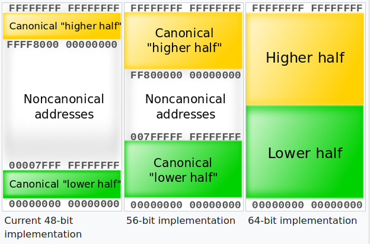
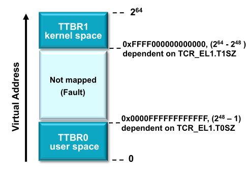
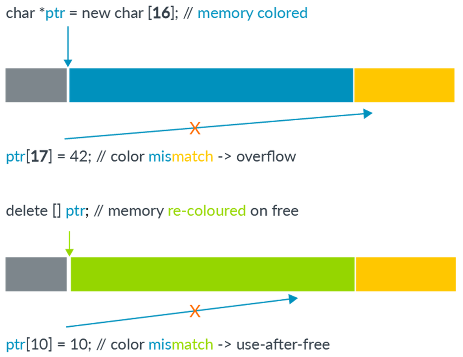
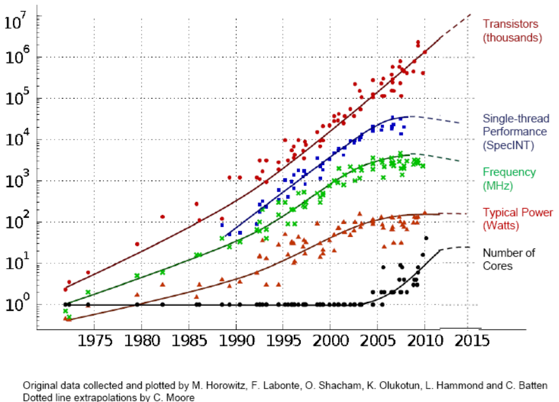
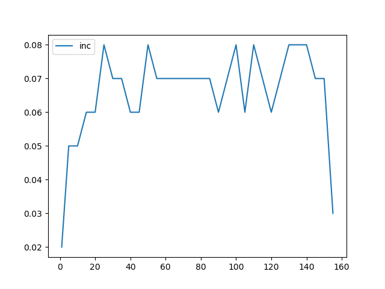
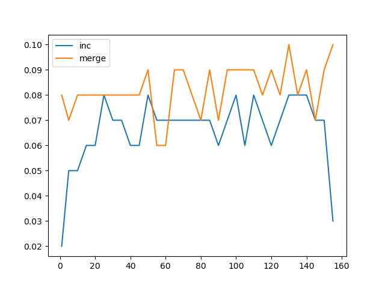
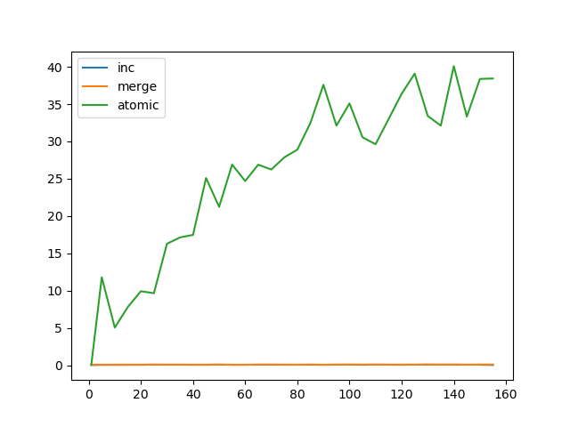
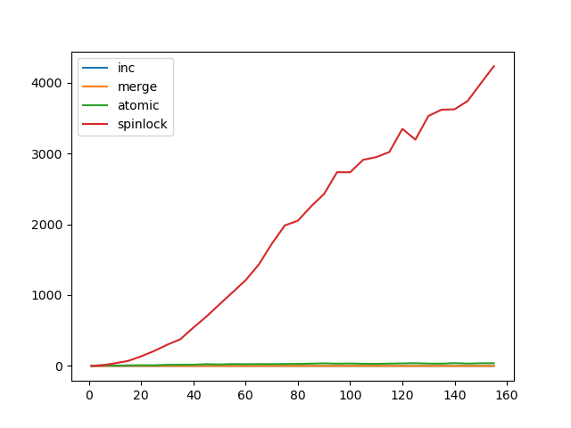

Taesoo Kim
Taesoo Kim
Ref. Please check the review material for Quiz 2!
What exactly is meant by the size of a virtual address space? For example, if you have two 64 bit computers with 16GB of physical RAM but one has a 2^40 address space whereas the other has 2^64 address space what’s different because won’t the size of each memory address in either system be 8 bytes since it is a 64 bit architecture? Why don’t they always max out the virtual address space? ie for 64 bit architecture give 2^64 address space?




$ sudo perf stat -d ./count 1 1000000000
cpu = 1, count = 1000000000
Performance counter stats for './count 1 1000000000':
1,451.93 msec task-clock # 0.999 CPUs utilized
3 context-switches # 0.002 K/sec
0 cpu-migrations # 0.000 K/sec
68 page-faults # 0.047 K/sec
5,523,257,353 cycles # 3.804 GHz (62.61%)
4,025,305,227 instructions # 0.73 insn per cycle (75.21%)
1,002,727,356 branches # 690.617 M/sec (75.21%)
21,014 branch-misses # 0.00% of all branches (75.21%)
994,765,813 L1-dcache-loads # 685.133 M/sec (75.21%)
52,550 L1-dcache-load-misses # 0.01% of all L1-dcache hits (75.21%)
8,480 LLC-loads # 0.006 M/sec (49.59%)
1,359 LLC-load-misses # 16.03% of all LL-cache hits (49.59%)
1.453028001 seconds time elapsed
1.451706000 seconds user
0.000000000 seconds sys$ sudo perf stat -d ./count 2 500000000
cpu = 2, count = 501651355
Performance counter stats for './count 2 500000000':
2,151.63 msec task-clock # 1.995 CPUs utilized
29 context-switches # 0.013 K/sec
3 cpu-migrations # 0.001 K/sec
70 page-faults # 0.033 K/sec
8,069,084,968 cycles # 3.750 GHz (61.02%)
4,028,632,000 instructions # 0.50 insn per cycle (74.03%)
1,004,762,321 branches # 466.978 M/sec (74.88%)
30,428 branch-misses # 0.00% of all branches (75.75%)
994,061,232 L1-dcache-loads # 462.004 M/sec (75.84%)
44,806,280 L1-dcache-load-misses # 4.51% of all L1-dcache hits (75.84%)
9,355,986 LLC-loads # 4.348 M/sec (49.29%)
6,268 LLC-load-misses # 0.07% of all LL-cache hits (48.41%)
1.078321208 seconds time elapsed
2.150210000 seconds user
0.000000000 seconds sys$ taskset --help
Usage: taskset [options] [mask | cpu-list] [pid|cmd [args...]]
Show or change the CPU affinity of a process.
Options:
-a, --all-tasks operate on all the tasks (threads) for a given pid
-p, --pid operate on existing given pid
-c, --cpu-list display and specify cpus in list format
-h, --help display this help
-V, --version display version
...$ taskset 1 time ./count 1 1000000000
cpu = 1, count = 1000000000
1.41user 0.00system 0:01.42elapsed 99%CPU (0avgtext+0avgdata 1740maxresident)k
0inputs+0outputs (0major+81minor)pagefaults 0swaps
$ taskset 1 time ./count 2 500000000
cpu = 2, count = 1000000000
1.41user 0.00system 0:01.42elapsed 99%CPU (0avgtext+0avgdata 1656maxresident)k
0inputs+0outputs (0major+80minor)pagefaults 0swaps$ time ./count 1 1000000000
cpu = 1, count = 1000000000
4.77user 0.00system 0:04.78elapsed 99%CPU (0avgtext+0avgdata 1672maxresident)k
0inputs+0outputs (0major+79minor)pagefaults 0swaps
$ time ./count 2 500000000
cpu = 2, count = 1000000000
33.37user 0.00system 0:17.04elapsed 195%CPU (0avgtext+0avgdata 1668maxresident)k
0inputs+0outputs (0major+79minor)pagefaults 0swaps$ sudo perf stat -d ./count 1 1000000000
cpu = 1, count = 1000000000
Performance counter stats for './count 1 1000000000':
4,872.17 msec task-clock # 1.000 CPUs utilized
10 context-switches # 0.002 K/sec
0 cpu-migrations # 0.000 K/sec
67 page-faults # 0.014 K/sec
18,205,583,156 cycles # 3.737 GHz (62.44%)
4,008,942,183 instructions # 0.22 insn per cycle (74.96%)
1,002,553,661 branches # 205.771 M/sec (74.96%)
39,674 branch-misses # 0.00% of all branches (74.96%)
999,210,530 L1-dcache-loads # 205.085 M/sec (74.96%)
128,514 L1-dcache-load-misses # 0.01% of all L1-dcache hits (75.11%)
37,522 LLC-loads # 0.008 M/sec (50.08%)
8,030 LLC-load-misses # 21.40% of all LL-cache hits (49.93%)
4.873511073 seconds time elapsed
4.868987000 seconds user
0.000000000 seconds sys$ sudo perf stat -d ./count 2 500000000
cpu = 2, count = 1000000000
Performance counter stats for './count 2 500000000':
33,874.88 msec task-clock # 1.953 CPUs utilized
59 context-switches # 0.002 K/sec
3 cpu-migrations # 0.000 K/sec
70 page-faults # 0.002 K/sec
121,053,878,992 cycles # 3.574 GHz (62.46%)
4,025,737,317 instructions # 0.03 insn per cycle (74.97%)
1,005,310,106 branches # 29.677 M/sec (74.97%)
226,866 branch-misses # 0.02% of all branches (74.98%)
1,005,112,429 L1-dcache-loads # 29.671 M/sec (75.01%)
554,644,791 L1-dcache-load-misses # 55.18% of all L1-dcache hits (75.05%)
299,123 LLC-loads # 0.009 M/sec (50.02%)
55,176 LLC-load-misses # 18.45% of all LL-cache hits (49.97%)
17.348257458 seconds time elapsed
33.839990000 seconds user
0.000000000 seconds syswhile true; do ./count 2 10 | grep 10 ; done$ time ./count 1 1000000000
cpu = 1, count = 1000000000
1.50user 0.00system 0:01.51elapsed 99%CPU (0avgtext+0avgdata 1728maxresident)k
0inputs+0outputs (0major+80minor)pagefaults 0swaps
$ time ./count 2 500000000
cpu = 2, count = 1000000000
1.61user 0.00system 0:00.80elapsed 199%CPU (0avgtext+0avgdata 1644maxresident)k
0inputs+0outputs (0major+80minor)pagefaults 0swapswhile true; do ./count 2 10 | grep 10 ; done$ time ./count 1 1000000000
cpu = 1, count = 1000000000
1.41user 0.00system 0:01.41elapsed 99%CPU (0avgtext+0avgdata 1584maxresident)k
0inputs+0outputs (0major+75minor)pagefaults 0swaps
$ time ./count 2 500000000
cpu = 2, count = 1000000000
1.44user 0.00system 0:00.72elapsed 200%CPU (0avgtext+0avgdata 1596maxresident)k
0inputs+0outputs (0major+78minor)pagefaults 0swapsacquire(l); x = x + 1; release(l);put(a + 100) and put(b - 100) must be both effective, or neither



impl<T> Mutex<T> {
pub fn lock(&self) -> MutexGuard<T> {
if !is_mmu_ready() { return MutexGuard { lock: &self }; }
loop {
if !self.locked.swap(true, Ordering::Acquire) {
return MutexGuard { lock: &self };
}
}
}
fn unlock(&self) {
if !is_mmu_ready() { return; }
self.locked.store(false, Ordering::Release);
}
}spinlockmutex (sleeping locks)→ Lab5 (release soon!)